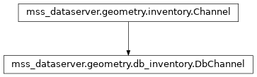

DbChannel¶
Properties¶
assigned_recorders
idThe database id.
nslc
nslc_string
parent_inventory
Methods¶
|
Initialize the instance |
|
Add a stream to the channel. |
|
|
|
Create a channel from a dictionary. |
|
|
|
|
|
Get a stream from the channel. |
|
Merge a channel with the existing one. |
|
Remove a stream from the channel. |
|
Remove a stream timebox. |
Inheritence diagram¶
